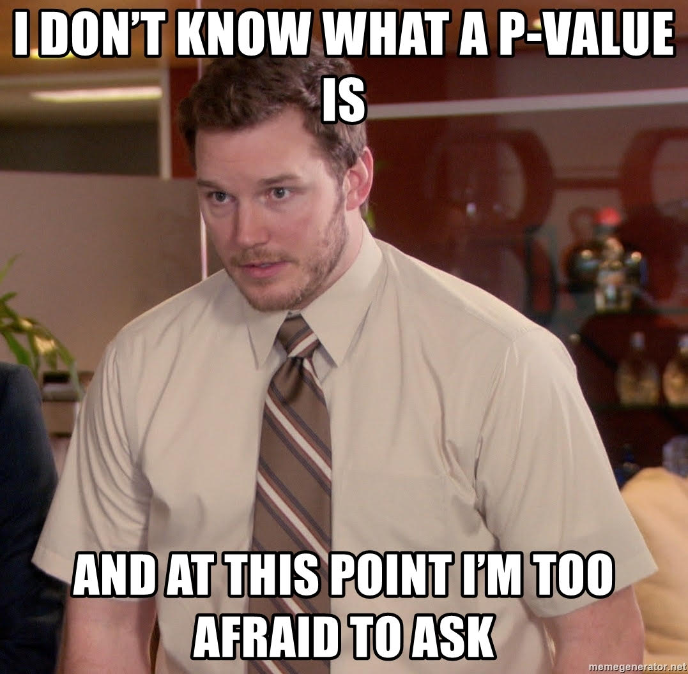

Lab 11: Paired t Test
Computer Lab 11
Tip
Run the R code cells directly in your browser. Use the quiz buttons for immediate feedback, then record your answers in eLC.
Introduction
In this lab you learn how to implement a paired t test, and visualize paired data in R.
Paired t Tests
The paired t-test is a statistical procedure used to test whether the mean difference between two sets of observations is zero. In a paired t-test, each subject is measured twice, resulting in pairs of observations. The difference between paired samples is often referred too as delta (\(\delta\)) which in most cases is used to represent change. In our case we are interested to see if there was a significant change/difference in the mean difference between to matched populations. The null hypothesis is that the true mean difference is zero (\(H_{0}:~\mu_{1}-\mu_{2}=0\)). The two-sided alternative hypothesis assumes the mean difference is not equal to zero (\(H_{A}:~\mu_{1}-\mu_{2}\neq 0\)).
Why do we use paired t tests?
Paired Samples
Before you use any statistical test you need to make sure you are using the right test for the data you have. The paired t test requires paired data.
What is paired data? Paired data is defined as any circumstance in which each data point in one set of observations is uniquely matched to a data point in a second set of observations. Examples of studies that create paired data are pre/post samples in which variables are measured before and after an intervention. Cross over trials, and matched samples also create paired data. In all these cases there is a clear connect between unique pairs in the data. It is critical that you can identify the data type so that you do not use the wrong methods. The table below shows a very basic example of data from a paired design. The differences are calculated between pairs. The data we use is the difference column not data from sample 1 or sample 2 individually.
| Pair | Measure 1 | Measure 2 | Difference (delta) |
|---|---|---|---|
| 1 | 4 | 4 | 0 |
| 2 | 5 | 2 | 3 |
| 3 | 2 | 2 | 0 |
| 4 | 7 | 5 | 2 |
| 5 | 2 | 1 | 1 |
| 6 | 1 | 0 | 1 |
| 7 | 5 | 4 | 1 |
| Measure 1 (Mean) | Measure 2 (Mean) | Mean Difference | |
| 3.71 | 2.57 | 1.14 |
The exercises in this lab will use data from a cross over study. Read the description of how the data was collected and then complete the exercises.
Study Description
A crossover experiment was carried out to test the efficacy of Motrin for relieving pain due to tennis elbow. 82 volunteers in a sample were randomly assigned to two treatment groups. Volunteers assigned to group 1 took Motrin for 3 weeks, followed by a 2-week washout period, and then took placebo for 3 weeks. Volunteers assigned to group 2 took placebo for 3 weeks, followed by a 2-week washout period, and then took Motrin for 3 weeks. Each volunteer was asked to fill out a questionnaire at three different times. First participants were asked to compare their pain level while they were playing tennis with their pain level at baseline. Next participants were asked to compare their pain level 12 hours after they finished playing tennis to their baseline. Finally, at the end of the treatment period the participants were asked about their overall impression on the drugs efficacy in reducing pain compared to baseline. The pain level was assessed using the following 6-point Likert scale. The values of the Likert scale correspond to the following changes from baseline pain: 1 = worse, 2 = unchanged, 3 = slightly improved (25%), 4 = moderately improved (50%), 5 = mostly improved (75%), 6 = completely improved (100%).
Exercise 1: Data and Assumption Check
Data Dictionary
Age: Age of the participant in years
Motrin1: Change in pain while playing tennis (Likert scale response while taking Motrin)
Motrin2: Change in pain 12 hours after playing tennis (Likert scale response while taking Motrin)
Motrin3: Over all change in pain at the end of the treatment period (Likert scale response after taking Motrin for 3 weeks)
Placebo1: Change in pain while playing tennis (Likert scale response while taking placebo)
Placebo2: Change in pain 12 hours after playing tennis (Likert scale response while taking placebo)
Placebo3: Over all change in pain at the end of the treatment period (Likert scale response after taking placebo for 3 weeks)
Delta1: Difference between Motrin and placebo while playing tennis (Motrin1 minus Placebo1)
Delta2: Difference between Motrin and placebo 12 hours after playing tennis (Motrin2 minus Placebo2)
Delta3: Difference between Motrin and placebo at the end of the treatment period (Motrin3 minus Placebo3)
Instructions Review the data and variable distributions. Answer the quiz questions.
NoteOriginal Shiny interface
This widget needs a browser-side replacement in WebR or JavaScript.
fluidPage(
wellPanel(
fluidRow(
column(
6,
selectInput('var', label = "Select Variable to Summarize",
choices = list("Age", "Motrin1", "Motrin2", "Motrin3", "Placebo1", "Placebo2", "Placebo3", "Delta1", "Delta2", "Delta3"),
selected = "Age")
)
)
),
fluidRow(
column(
12,
h4(strong("Data")),
DT::dataTableOutput('rawdata')
)
),
fluidRow(
column(
6,
h4(strong("Plot of Selected Variable")),
plotOutput(outputId = 'plot', width = "100%")
),
column(
6,
h4(strong("Summary of Selected Variable")),
verbatimTextOutput("summary")
)
)
)
NoteOriginal Shiny server logic
This code is retained for migration reference. The static replacement should run in the browser without a Shiny server.
#Basic plot of the selected variable
output$plot <- renderPlot({
validate(need(!is.null(input$var), 'Please select a variable to show the plot.'))
if(is.numeric(Tennis3[ ,input$var])){
x <- Tennis3[ ,input$var]
bins <- round((max(x)-min(x))/(3.5*(sd(x)/length(Tennis3[ ,input$var])^(1/3))),0)
hist(Tennis3[ ,input$var],
breaks = bins,
main = paste(input$var),
xlab = paste(input$var))
}
if(is.integer(Tennis3[ ,input$var])||is.factor(Tennis3[ ,input$var])){
x<-Tennis3[ ,input$var]
x<-table(x)
barplot(x,
ylab = "Count",
xlab = paste(input$var))
}
})
# show raw data
output$rawdata <- DT::renderDataTable({
DT::datatable(Tennis3, options = list(lengthMenu = c(5, 30, 50), pageLength = 5))
})
# show a summary of the selected variable
output$summary <- renderPrint({
validate(need(!is.null(input$var), 'Please select a variable to show the summary.'))
x <- Tennis3[ ,input$var]
summary(x)
})
Quiz: Questions 1-3
Question 1
Which variables need to have a normal distribution for the paired t test? (Select all the apply)
Select all correct answers.
Question 2
Since the data is not normal can we use the Central Limit Theorem?
Question 3
Does our data meet the simple random sample requirement?
Exercise 2: Does Motrin reduce pain while playing tennis?
Now that you have a feel for the data and have check the assumptions for the paired t test we can start testing different hypothesis. We will use the same t.test() function from lab 10. There are two ways to get the results of the paired t test using this function. If the differences have already be calculated then it follows the same form as the one sample t test t.test(delta, mu=#, alternative= type), where “delta” is the the difference, “#” is the value of the null (\(\mu_{0}=0\)), and finally “type” which can be one of these three “two.sided”, “less”, or “greater”. If you don’t have the differences then this is the general form you will follow t.test(data$x1, data$x2, paired=TRUE, alternative= type). You will give two variables to R, data$x1 and data$x2 which are the paired data to be compared (in our case, change in pain, Motrin vs Placebo). Setting “paired=TRUE” lets R know to take the difference between the two variables (TRUE has to be in all capital letters or it will not work). The “type” is the same as before (two sided, less than, greater than). You can use either of these two ways to test the hypothesis (Note: if you use the first way, the results will still be labeled as “one-sample”, it is fine and if you think about it, you did only give it 1 sample).
Perform a paired t-test of the null hypothesis that Motrin has no impact on pain during maximum activity (Motrin1 vs. Placebo1) against the two-sided alternative at the 0.05 significance level.
\[\alpha=0.05\]
\[H_{0}: \mu_{Motrin1}-\mu_{Placebo1}=0\] \[H_{A}: \mu_{Motrin1}-\mu_{Placebo1}\neq0\]
Instructions: Complete the code below for both the ways to test the hypothesis and click the run code button. Use the output to answer the quiz questions. If you are having a hard time check out the example from STHDA paired t tests in R
Quiz: Questions 4-6
Question 1
What is the test statistic, degrees of freedom, and p-value of the test?
Question 2
What is the 95% confidence interval for the mean difference between the treatment groups?
Question 3
Can you infer that Motrin causes a change in pain level while playing tennis?
Exercise 3: Does Motrin reduce pain after playing tennis?
Perform a paired t-test of the null hypothesis that Motrin has no impact on pain after playing tennis (Motrin2 vs. Placebo2) against the two-sided alternative at the 0.05 significance level.
\[\alpha=0.05\]
\[H_{0}: \mu_{Motrin}-\mu_{Placebo}=0\] \[H_{A}: \mu_{Motrin}-\mu_{Placebo}\neq0\]
Instructions: Write the code to required to test the hypothesis and click the run code button. Use the output to answer the quiz questions. If you are having a hard time use the code above or check out the example from STHDA paired t tests in R
Quiz: Questions 7-9
Question 1
What is the test statistic, degrees of freedom, and p-value of the test?
Question 2
What is the 95% confidence interval for the mean difference between the treatment groups?
Question 3
Can you infer that Motrin causes a change in pain level after playing tennis?
Visualizing Paired Data
We will use a function called ggpaired() to visualize the over all change in pain at the end of treatment periods (Motrin3 vs Placebo3). Remember the higher the Likert scale score the greater the reduction in pain.
Exercise 4: Visualizing paired data
Instructions: The code below is complete, just click run code and use the plot to answer the quiz questions.
Explanation of Plot: The plot shows the distribution of Likert scale values reported by patients at the end of three weeks of treatment with either placebo or Motrin. The lines show the change in the reported Likert scale values between pairs. If the line has a positive slope from placebo to Motrin that indicates the participant had a greater reduction in pain when on Motrin. A line with a negative slope from placebo to Motrin indicates the participant had a greater reduction in pain when on placebo. A line with no slope (aka flat) indicates no change in pain.
Quiz: Question 10
Question 1
Based on the plot did everyone report having less pain with Motrin compared to placebo?
Summary
In this lab, you completed 4 exercises and answered 10 quiz questions.
The lab covered 2 topics:
- Paired t tests in R
- Visualizing paired data in R
Great work you are done with lab! Don’t forget to record your answers and take the eLC quiz to get credit
If you have time here is another rabbit hole to explore. The placebo effect is real and if you want to know more about it a good place to start is the article in The Scientist magazine.
